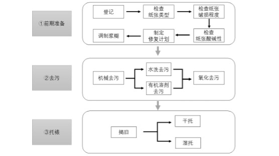
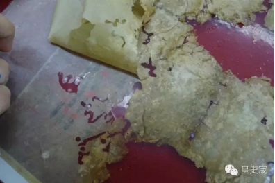
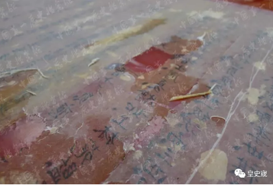
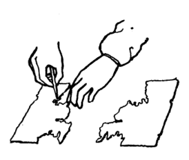
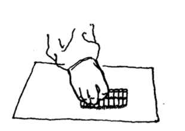
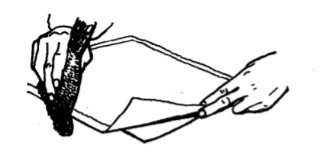
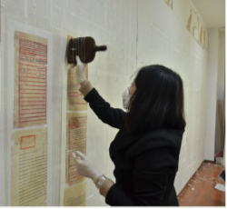

对于特残档案，纸张老化、酸化严重、糟朽成片，需拼对，粘连成砖，破损面积大于30%的档案，可采用托裱的方法进行修复。档案托裱技术是对破损档案纸张进行整体加固的一种技术方法。特残破损档案修复流程如下：

揭旧
若纸质档案过去托裱过，且由于某种原因受到损坏，遇到这种情况需要把档案上托裱的旧纸揭掉，称为揭旧。
①将档案字面向下扣放在案子上
②用排笔在档案背面均匀刷清水，用湿毛巾在档案上覆盖20分钟，使档案湿透
③取下湿毛巾扭干，再铺平搭在档案上，重复几次从而撤水
④用镊子将旧托纸成片揭下，如果揭不成片，可以用手指一点一点将旧托纸滚捻下来，这样揭速度慢，需要有耐心。

成片揭下

托裱分为湿托和干托，湿托是把浆糊刷在档案无字的一面，然后托上新纸加固，其优点是操作方便快捷，托出来的档案平整不易出褶，缺点是如果控制不好水分，会使档案中不耐水的字迹或表格出现扩散或洇化现象，适用于托裱字迹遇水不扩散的档案；干托是把浆糊刷在托纸上，再把托纸放在撤潮纸上撤潮，直到所剩水分不致湿透档案，档案保持不湿或微湿，最后将半干的托纸与档案黏合，干托适用于字迹遇水易扩散的档案。
湿托流程：
①将淘净的油纸从水盆里捞出，在案子上用湿毛巾铺平，将纸质档案放在油纸上。
②将纸质档案卷曲的部分打开，用喷壶洒少许水，用手轻轻压平，用镊子将档案破碎的地方接合、对正。

③均匀上浆。将纸质档案字面向下扣放在案子上，用排笔蘸浆，在档案的背面刷浆，刷浆从中缝或靠近中缝的地方开始，先中间，后两侧。为了使上浆均匀，可以反复多刷。

④上浆后拣净纸上的草梗、沙粒、掉下的排笔毛。
⑤轻上托纸。把托纸轻轻地平刷在档案的背后，做到既平且正。右手持棕刷，左手持卷纸，先把卷纸的头打开，用右手和棕刷握住纸的右端，然后以档案的右上角为基准，沿着档案上面的边，把卷纸打开直至中缝，比对后边缘后右手推刷上纸，从右向左推进，直至上完，四边留出宽窄一致的贴边。

⑥反复排实。排实是使托纸与档案结合的过程，为了使托纸能与档案牢固结合，必须反复排实，严防漏空。
⑦撤潮。将排实后的档案连同油纸移放到多层吸水纸上，油纸面在上，档案面在下，从背后排刷，使档案里的水分渗入吸水纸，便于上墙后快干。
⑧揭膜。将油纸从档案上揭下来，如遇到档案与油纸粘结，可用镊子在档案和油纸间轻轻地劈缝，然后压住档案，油纸便可取下来。
⑨上墙。档案撤潮后移到案子上，在档案托纸的四边涂上浆糊，贴到绷子上。上墙涂糊时注意留下启子口。

⑩档案晾干后下墙。将启子顺着启子口插入，把档案的下边和右边挑开，用右手扯档案右下角，向左上方撕扯，档案便顺利地脱离墙面。
干托流程：
①将淘净的油纸从水盆里捞出，在案子上用湿毛巾铺平
②托纸放在工作台上喷润展平，把浆糊刷在托纸上，晾至半干
③把托裱的档案字面朝下，反铺在油纸上，用镊子将不平整的地方展平
④将刷有浆糊的托纸提起放在档案上，用棕刷刷平
⑤反复排实。排实是使托纸与档案结合的过程，为了使托纸能与档案牢固结合，必须反复排实，严防漏空
⑥撤潮。将排实后的档案连同油纸移放到多层吸水纸上，油纸面在上，档案面在下，从背后排刷，使档案里的水分渗入吸水纸，便于上墙后快干
⑦揭膜。将油纸从档案上揭下来，如遇到档案与油纸粘结，可用镊子在档案和油纸间轻轻地劈缝，然后压住档案，油纸便可取下来
⑧上墙。档案撤潮后移到案子上，在档案托纸的四边涂上浆糊，贴到绷子上。上墙涂糊时注意留下启子口